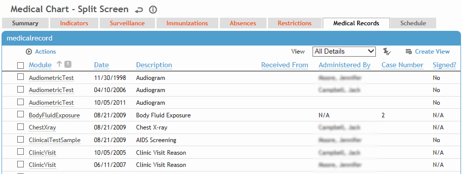

The Medical Records tab shows all of the employee’s clinical test results, audiometric results, pulmonary tests, vision tests, travel clearances, questionnaires, and documents, whether they have been signed or not.
To view the full record (e.g. view the full vision test form in the Vision Testing module), click the link.
To view an attached document, select the checkbox and choose Actions»Open Document.
